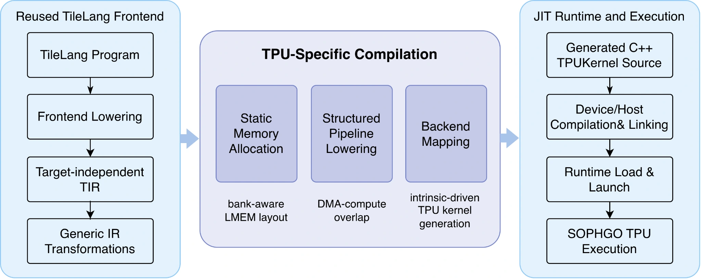

01 / 프로젝트 책임자
주요 단계 완료오픈소스
TileLang-TPU
컴파일 시점의 메모리 계획부터 커널 실행까지 지원하는 SOPHGO TPU용 TileLang 백엔드입니다.

소개
안녕하세요. 저는 베이징대학교와 중관춘 연구소의 공동 공학 박사과정에 재학 중인 Tianxing Ren입니다.
다양한 AI 알고리즘이 새로운 AI 하드웨어에서 정확하고 효율적으로 실행되도록 AI 컴파일러를 연구합니다. 사람과 에이전트가 더 쉽게 프로그래밍할 수 있도록 돕고자 합니다.
연구 프로젝트
타일 단위 프로그래밍을 새로운 AI 하드웨어에 적용하는 프로젝트를 이끌고 있습니다.
컴파일 시점의 메모리 계획부터 커널 실행까지 지원하는 SOPHGO TPU용 TileLang 백엔드입니다.

AME 행렬 가속을 제공하는 RISC-V CPU에 TileLang을 이식합니다. 오픈소스 하드웨어·시스템 연구팀과 진행 중인 프로젝트입니다.
소개
베이징대학교와 중관춘 연구소의 공동 공학 박사과정에 재학 중입니다. AI 컴파일러, 타일 단위 프로그래밍, 이종 컴퓨팅을 연구하며 관련 프로그래밍 언어와 컴퓨터 구조 문제에 관심이 있습니다.
Tao Xie 교수님과 Wei Yang 교수님의 지도를 받으며 박사과정 연구를 진행하고 있습니다.
더 알아보기